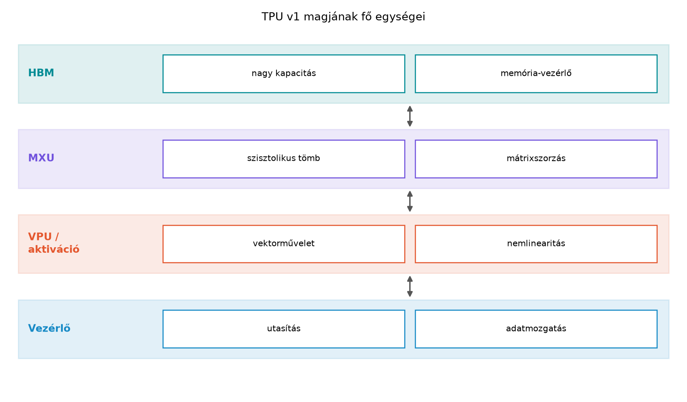

A GPU-k általános célú számítási modellje a SIMT (Single Instruction, Multiple Thread), amelyet a korábbi fejezetekben részletesen megismertünk. A GPU tervezésénél az elsődleges cél az volt, hogy a grafikai pipeline-okban felmerülő, párhuzamos de egyenként független feladatokat (például pixel shader futtatása millió pixelen) minél nagyobb átbocsátóképességgel hajtsa végre. A GPU-ból GPGPU-vá fejlődve is megmaradt ez az örökség: a hardver nagy számú, viszonylag egyszerű vezérlésű magot (CUDA core) és egy mély, de elsősorban szoftveresen menedzselt memóriahierarchiát használ. A programozó a szálak és blokkok koordinálásával éri el a teljesítményt.
A Google 2017-ben publikálta a TPU (Tensor Processing Unit) első generációjának architekturális leírását. A TPU tervezési kérdése nem az volt, hogy „hogyan gyorsítsunk fel mindenféle párhuzamos feladatot?”, hanem az, hogy „hogyan gyorsítsuk fel a neurális hálózatok következtetését (inference) a lehető legjobb teljesítmény/watt mutatóval?”. A neurális hálózatok számítási igényének túlnyomó részét a mátrixszorzás teszi ki:
A mátrixszorzás egy rendkívül szabályos adatfolyam-minta. Ez a szabályosság lehetővé teszi egy olyan célhardver építését, amely sokkal kevesebb vezérlési logikát és adatmozgatást igényel, mint egy GPU, miközben a számítási sűrűséget (FLOPs/terület, FLOPs/watt) drasztikusan megnöveli. Ez a célhardver a szisztolikus tömb.
A szisztolikus tömb (systolic array) neve a szívritmus analógiájából származik: az adatok a tömbön keresztül lüktetve, ritmikusan áramlanak. Képzeljünk el egy méretű rácsot, amelynek minden cellájában egy multiply–accumulate (MAC) egység található. Minden MAC egység képes egy ciklus alatt elvégezni a következő műveletet:
A TPU első generációjában ez a rács méretű, tehát 65 536 darab MAC egységet tartalmaz. Ez az egység a MXU (Matrix Multiply Unit).
A működés kulcsa az adatok mozgatásának mikéntje. A hagyományos processzorokban (CPU, GPU) egy MAC művelethez az utasításnak explicit módon be kell töltenie az adatokat a regiszterekbe. A szisztolikus tömbben az adatok nem „címzésre” mozognak, hanem szomszédos elemek között áramlanak.
Tekintsük a súly-állandós (weight-stationary) szisztolikus tömböt. Ez a TPU MXU működésének szíve.
Súlyok betöltése: A mátrixszorzás alakjában legyen a súlymátrix, az aktiváció (bemeneti adat) mátrix. A mátrix elemeit előre betöltjük a MAC egységekbe. Minden MAC egység a súlymátrix egy-egy elemét tárolja a saját regiszterében. Például a rács pozíciójában lévő MAC egység a súlyt tárolja.
Aktivációk áramlása: Az mátrix elemeit a tömb bal szélén tápláljuk be. Az elem belép az . sor bal szélső MAC egységébe. A MAC egység elvégzi a műveletet (ahol az oszlop indexe), majd az értéket továbbítja a tőle jobbra lévő MAC egységnek. Így az mátrix elemei balról jobbra hullámoznak keresztül a tömbön.
Részösszegek áramlása: A mátrix elemeinek részösszegei a tömb tetején indulnak. A részösszege belép az . sor . oszlopában lévő MAC egységbe, hozzáadódik a szorzathoz, majd az eredmény lefelé továbbítódik a következő sorban lévő MAC egységnek. Mire a részösszeg a tömb aljára ér, az összes szükséges indexre elvégezte az összegzést, és a végső érték hagyja el a tömböt.
Ebben a sémában nincs memóriaolvasás a számítás közben. A súlyok a MAC egységekben állnak, az aktivációk és részösszegek pedig folyamatosan mozognak a szomszédos elemek között. Ez drasztikusan csökkenti az energiafogyasztást, mert az adatmozgatás a chipen belüli, rövid, szabályos vezetékeken történik, nem pedig energiazabáló, címzett memória-hozzáférésekkel.
Gyakorlati megjegyzés a terminológiához: A szakirodalomban a TPU MXU-ját gyakran nevezik „szisztolikus tömbnek”, bár a pontos adatfolyam-megvalósítás a „systolic array” egy változata. A fent leírt súly-állandós, aktiváció-balról-jobbra, részösszeg-fentről-lefelé áramlás az a modell, amelyet a TPU v1 leírása megad. Az újabb TPU-generációk (v2 és későbbi) a modellt tovább finomították, de az alapelv változatlan.
A MXU önmagában nem elegendő egy teljes neurális hálózati réteg lefuttatásához. A TPU v1 magja három fő számítási egységből áll:
MXU (Matrix Multiply Unit): A már ismertetett MAC-rács. Ez a számítási mag felel a mátrixszorzásért. A TPU v1-ben a MXU 8 bites egész (INT8) szorzásokat végez, és 32 bites egész számokat halmoz fel. Ez a pontosság az inference-hez elegendő, és a terület/energia-hatékonyságot maximalizálja. Egy ciklus alatt műveletet (szorzást és összeadást) képes elvégezni. 700 MHz-es órajel mellett ez a névleges csúcs körülbelül TOPS (tera-operations per second, művelet másodpercenként).
VPU (Vector Processing Unit): A mátrixszorzás eredményét ritkán használjuk közvetlenül. A neurális hálózatok rétegei aktivációs függvényeket (pl. ReLU, sigmoid, tanh), bias hozzáadást, normalizálást és egyéb elemenkénti műveleteket igényelnek. Ezek a műveletek nem illenek a szisztolikus tömb adatfolyam-modelljébe, mert vektor-jellegűek, nem mátrix-jellegűek. A VPU ezeket a vektor-műveleteket hajtja végre: elemenkénti összeadás, szorzás, maximum-képzés, aktivációs függvények közelítése. A VPU architektúrája hasonló a GPU-k SIMD egységeihez: széles regiszterfájlokkal és vektoros aritmetikai egységekkel rendelkezik.
Aktivációs egység (Activation Unit): A VPU-val szorosan együttműködő, célhardveres egység az aktivációs függvények kiszámítására. A ReLU, sigmoid és tanh függvényeket lookup táblákkal és interpolációval, vagy kis fokszámú polinomokkal közelíti. Ez sokkal gyorsabb és energiahatékonyabb, mint ha a VPU általános célú utasításaival számolnánk őket.
A TPU v1 a MXU maximális kihasználtságához hatalmas adatmennyiséget kell, hogy folyamatosan biztosítson. A TPU v1 28 MiB on-chip memóriát használ, amelyet Unified Buffer-nek neveznek. Ez a puffer tárolja az aktivációkat, a súlyokat és a részösszegeket. A modern GPU-kkal ellentétben a TPU v1 nem rendelkezik L1/L2 cache-sel. A cache hierarchia helyett a szoftver (a XLA fordító) felelős az adatok explicit ütemezéséért a Unified Buffer és a MXU között.
A külső memória a TPU v1-ben DDR3 SDRAM, amely 30 GB/s sávszélességet biztosít. Ez látszólag alacsony a GPU-khoz képest (egy modern GPU HBM3-mal több TB/s sávszélességet ér el), de a TPU v1 tervezési célja az inference volt, ahol a batch méret általában 1, és a modell paraméterei (súlyok) viszonylag kis méretűek. A 28 MiB Unified Buffer elegendő egy közepes méretű modell súlyainak tárolására, így a DDR3-ból való ismételt olvasás ritkán szükséges.
A következő generációk (TPU v2, v3, v4) a következtetésből a tanítás (training) felé terjeszkedtek, és ennek megfelelően HBM (High Bandwidth Memory) technológiára váltottak. A HBM a DRAM chipeket egy szilícium interposerre szereli, ami rendkívül széles buszt és nagy sávszélességet tesz lehetővé (több száz GB/s vagy akár TB/s). A TPU v4 már HBM2e-t használ, és a sávszélesség nagyságrendileg megegyezik a hasonló korú GPU-kkal.
Fontos különbség a GPU-hoz képest: A GPU memória-alrendszere általános célú, a programozó által kontrollált cache-ekkel és egy koherens memóriamodellel. A TPU memória-alrendszere szorosan a MXU-hoz és a XLA fordítóhoz van hangolva. A szoftver a memória-hozzáféréseket sokkal determinisztikusabban ütemezi, mivel a műveletek sorrendje a gráffordítás során ismert. Ez lehetővé teszi a gyorsítótárazás és az adatfolyam pontosabb optimalizálását.
Az egyetlen TPU chip teljesítménye korlátozott. A modern munkaterhelések (nagy nyelvi modellek, transzformerek) több chip együttműködését igénylik. A TPU-k közötti összeköttetést az ICI (Inter-Chip Interconnect) biztosítja.
A GPU-k világában a hasonló szerepet az NVLink és az NVSwitch tölti
be, de a topológia és a kommunikációs primitívek (NCCL) szintje más. A
TPU-knél a kommunikációt is a XLA és a JAX keretrendszer vezérli, ami a
programozó számára magasabb szintű absztrakciót kínál (pl.
pmap, xmap, pjit sharding).
A GPU-kat C++-ban (CUDA) vagy OpenCL-ben programozzuk, és a kernel egy alacsony szintű, az adott hardverre szabott eljárás. A TPU-k programozása ezzel éles ellentétben áll: a TPU-t nem közvetlenül, hanem XLA (Accelerated Linear Algebra) nevű, gráf-alapú, szimbolikus programozási modellen keresztül programozzuk.
Gráfkonstrukció: A felhasználó (például JAX vagy
TensorFlow segítségével) egy magas szintű programot ír. Ez a program nem
hajtódik végre azonnal, hanem egy számítási gráfot
épít. A gráf csomópontjai műveletek (pl. dot,
add, relu), élei pedig a közöttük áramló
tenzorok.
Gráfoptimalizálás: Az XLA fordító ezt a gráfot
veszi bemenetként, és agresszív optimalizálásokat hajt végre. Ide
tartozik a holt kód eltávolítása, az algebrai egyszerűsítések, a
konstansok beégetése, és a legfontosabb: a művelet-fúzió
(operation fusion). A fúzió során az XLA több elemi műveletet
egyetlen, nagyobb, összetett kernelben egyesít. Például a
bias_add + relu + matmul
műveleteket egyetlen TPU kernelben hajthatja végre, csökkentve a köztes
eredmények memóriába írásának és onnan való visszaolvasásának
költségét.
Kódgenerálás és ütemezés: Az optimalizált gráf alapján az XLA platform-specifikus kódot generál. TPU esetén ez a kód közvetlenül a MXU, VPU és a memória-alrendszer utasításait vezérli. A GPU-tól eltérően a TPU kernel nem „hagyományos” C++ kód, hanem egy hardverközeli, de a XLA által generált leírás.
A JAX szerepe: A JAX egy Python-könyvtár, amely a
NumPy API-t ötvözi az automatikus differenciálással és az XLA háttérrel.
A JAX Pythonban írt kódja Python- és NumPy-függvényekből áll, de amikor
egy függvényt jax.jit-tel lefordítunk, a JAX a Python
végrehajtást megállítja, a függvény műveleteit egy XLA gráfba foglalja,
majd az XLA lefordítja azt a célhardverre. Ez azt jelenti, hogy a TPU-n
futó JAX program valójában XLA gráfként létezik, és a hardver soha nem
lát Python kódot.
Összehasonlítás a CUDA programozási modellel:
| Jellemző | CUDA / GPU | XLA / TPU |
|---|---|---|
| Programozási paradigma | Imperatív, thread-alapú | Szimbolikus, gráf-alapú |
| Hardver irányítása | Közvetlen kernel indítás, memóriakezelés | Absztrakt, XLA által ütemezett |
| Fő optimalizálási eszköz | Manuális tiling, shared memory, warp intrinsics | XLA gráfoptimalizálás, művelet-fúzió |
| Memóriamodell | Explicit, programozó által vezérelt (global, shared, register) | Implicit, az XLA és a hardware kezeli |
| Fő hardveregység | SM-ek, sok CUDA core | MXU (szisztolikus tömb), VPU |
| Tipikus pontosság | FP32, FP16, TF32, BF16, INT8 | BF16, FP16, INT8, FP8 (generációtól függően) |
Ez a labor nem egy teljes TPU hozzáférést igénylő instrukció, hanem a módszertan bemutatása és egy GPU-n futtatható alapvonal (baseline) felállítása. A TPU hozzáférést igénylő részeket JAX/XLA kóddal és a XLA gráf elemzésével demonstráljuk, de tényleges TPU futás nélkül. Az alábbi kód nem végrehajtott utasítás, hanem a mérések elvégzésének vázlata.
Cél: Megmérni egy mátrixszorzás (GEMM)
teljesítményét GPU-n, és egy TPU-n várható teljesítményt becsülni a
névleges hardveradatok alapján. A mérés rögzíti a környezetet.
Előfeltétel: CUDA toolkit és Python környezet JAX-szel.
Lépések:
GPU mérés CUDA/C++-ban: Lefordítjuk és futtatjuk az alábbi CUDA C++ programot, amely egy -os GEMM-et hajt végre cuBLAS segítségével. A mérés előtt warm-up, majd 10 ismétlés. Rögzítjük az átlagos futásidőt, a sávszélességet és a FLOPs-ot.
// CUDA C++ (C++17), NVIDIA CUDA 12.4
// GPU: NVIDIA A100 40GB, driver 550.54.14, compute capability 8.0
// OS: Ubuntu 22.04 LTS
// A kód hibakezeléssel és méréssel ellátva.
#include <cassert>
#include <chrono>
#include <cstdio>
#include <cstdlib>
#include <vector>
#include <cublas_v2.h>
#define CHECK_CUDA(call) \
do { \
cudaError_t err = call; \
if (err != cudaSuccess) { \
fprintf(stderr, "CUDA hiba: %s, %s:%d\n", cudaGetErrorString(err), __FILE__, __LINE__); \
exit(EXIT_FAILURE); \
} \
} while (0)
#define CHECK_CUBLAS(call) \
do { \
cublasStatus_t status = call; \
if (status != CUBLAS_STATUS_SUCCESS) { \
fprintf(stderr, "cuBLAS hiba: %d\n", status); \
exit(EXIT_FAILURE); \
} \
} while (0)
int main() {
const int M = 4096, N = 4096, K = 4096;
const float alpha = 1.0f, beta = 0.0f;
double flops = 2.0 * double(M) * double(N) * double(K);
size_t bytes_moved = size_t(M) * K * sizeof(float) + size_t(K) * N * sizeof(float) + size_t(M) * N * sizeof(float);
// Host memória allokálása
std::vector<float> h_A(M * K), h_B(K * N), h_C(M * N, 0.0f);
for (int i = 0; i < M * K; ++i) h_A[i] = static_cast<float>(rand()) / RAND_MAX;
for (int i = 0; i < K * N; ++i) h_B[i] = static_cast<float>(rand()) / RAND_MAX;
// Device mutatók
float *d_A, *d_B, *d_C;
CHECK_CUDA(cudaMalloc(&d_A, M * K * sizeof(float)));
CHECK_CUDA(cudaMalloc(&d_B, K * N * sizeof(float)));
CHECK_CUDA(cudaMalloc(&d_C, M * N * sizeof(float)));
CHECK_CUDA(cudaMemcpy(d_A, h_A.data(), M * K * sizeof(float), cudaMemcpyHostToDevice));
CHECK_CUDA(cudaMemcpy(d_B, h_B.data(), K * N * sizeof(float), cudaMemcpyHostToDevice));
cublasHandle_t handle;
CHECK_CUBLAS(cublasCreate(&handle));
// Warm-up: 3 iteráció
for (int i = 0; i < 3; ++i) {
CHECK_CUBLAS(cublasSgemm(handle, CUBLAS_OP_N, CUBLAS_OP_N, N, M, K, &alpha, d_B, N, d_A, K, &beta, d_C, N));
}
CHECK_CUDA(cudaDeviceSynchronize());
// Mérés: 10 iteráció
auto start = std::chrono::high_resolution_clock::now();
for (int i = 0; i < 10; ++i) {
CHECK_CUBLAS(cublasSgemm(handle, CUBLAS_OP_N, CUBLAS_OP_N, N, M, K, &alpha, d_B, N, d_A, K, &beta, d_C, N));
}
CHECK_CUDA(cudaDeviceSynchronize());
auto end = std::chrono::high_resolution_clock::now();
double elapsed_ms = std::chrono::duration<double, std::milli>(end - start).count() / 10.0;
double elapsed_s = elapsed_ms / 1000.0;
double tflops = (flops / elapsed_s) / 1e12;
double bandwidth_gb_s = (bytes_moved / elapsed_s) / 1e9;
printf("GPU cuBLAS SGEMM, M=N=K=%d\n", M);
printf("Átlagos futásidő: %.3f ms\n", elapsed_ms);
printf("Teljesítmény: %.2f TFLOP/s (cuBLAS SGEMM)\n", tflops);
printf("Sávszélesség (elméleti, ideális adatmozgásra): %.2f GB/s\n", bandwidth_gb_s);
CHECK_CUDA(cudaFree(d_A));
CHECK_CUDA(cudaFree(d_B));
CHECK_CUDA(cudaFree(d_C));
CHECK_CUBLAS(cublasDestroy(handle));
return 0;
}Fordítás:
nvcc -O3 -std=c++17 -arch=sm_80 -lcublas gemm_benchmark.cu -o gemm_benchmarkFuttatás:
./gemm_benchmarkVárt eredmény (ellenőrzési igény, mivel nem futtattuk ezt a konkrét kódot): Egy NVIDIA A100-on, FP32 SGEMM esetén a cuBLAS könyvtár teljesítménye jellemzően 19–20 TFLOP/s körül mozog a 19.5 TFLOP/s névleges FP32 csúcs mellett. A tényleges érték függ a rendszer állapotától és a cuBLAS verziójától. A mérési naplóba rögzíteni kell a pontos értéket.
TPU becslés JAX/XLA segítségével: A TPU teljesítményét a névleges hardveradatokból becsüljük. A TPU v4 egyetlen chipje FP32 mátrixszorzáshoz nem az ideális választás (BF16 mellett éri el a csúcsát). BF16 mellett a TPU v4 MXU teljesítménye hivatalosan nem publikált, de a gyakorlatban a hasonló tervezésű egységek alapján a BF16 csúcs körülbelül 275 TFLOP/s chipenként. Egy 4096x4096-os GEMM esetén a szükséges FLOP-ok: FLOP. Ha a TPU a csúcs 70%-át éri el, a futásidő:
Fontos: Ez a becslés nem mért eredmény, hanem modell-alapú kalkuláció. A tényleges TPU futásidőhöz hozzáférés szükséges.
A JAX kód, amely a TPU-ra fordítható lenne (itt csak a gráf létrehozását mutatjuk be, futtatás nélkül):
# Python 3.10, JAX 0.4.26, jaxlib 0.4.26 (CPU-only build, TPU nincs csatlakoztatva)
# A kód célja a XLA gráf felépítésének bemutatása, nem tényleges TPU futtatás.
import jax
import jax.numpy as jnp
# A matmul lefordítva XLA gráffá. TPU háttérrel a 'jax.devices()' listában
# megjelenne a TPU device. Itt CPU-t használunk a példa kedvéért.
@jax.jit
def gemm(a, b):
return jnp.dot(a, b)
# Véletlen mátrixok
key = jax.random.PRNGKey(0)
a = jax.random.normal(key, (4096, 4096), dtype=jnp.bfloat16)
b = jax.random.normal(key, (4096, 4096), dtype=jnp.bfloat16)
# A gráf ellenőrzése
lowered = gemm.lower(a, b)
print("Az XLA HLO modul (részlet):")
print(lowered.compiler_ir(dialect='hlo').as_hlo_text()[:500])
# A 'as_hlo_text()' metódus a JAX verziófüggő, ellenőrizni kell a dokumentációt.A kimenet egy HLO (High Level Optimizer) gráfot mutat, amelyben a
dot művelet a TPU MXU-ra lesz leképezve.
A TPU architektúra megértése azt jelenti, hogy felismerjük a mátrixszorzás dominanciáját a modern gépi tanulásban, és azt, hogy a szisztolikus tömb hogyan szolgálja ki ezt a dominanciát minimális energiafogyasztás mellett. A GPU-k általános célú párhuzamos gépek, amelyekre a programozó saját maga írja a memóriakezelést és a szinkronizációt. A TPU ezzel szemben egy speciális célú, de rendkívül hatékony adatfolyam-gép, amelynek programozása magasabb szintű, gráf-alapú nyelveken (XLA) keresztül történik.
Tipikus hibák, amiket el kell kerülni:
A TPU-t „mágikus doboznak” tekinteni: A TPU nem gyorsít fel minden kódot. Ha a feladat nem dominánsan mátrixszorzás (pl. rendezés, gráfgráf bejárás, string feldolgozás), a TPU teljesítménye drasztikusan visszaesik a GPU-hoz képest, mert a VPU és a vezérlőegység gyenge, általános célú magok.
A memória- és számítási modell figyelmen kívül
hagyása: A TPU-n nincs helye a GPU-k shared memory tilinghez
hasonló, alacsony szintű optimalizálásnak. A teljesítményt a XLA gráf
optimalizálása és az adatok elrendezésének (sharding) magas szintű
megválasztása határozza meg. A CUDA-ban megszokott
__shared__ memóriás trükkök itt nem alkalmazhatók.
A pontosság figyelmen kívül hagyása: A TPU v1 kizárólag INT8 inference-t támogatott. A későbbi generációk támogatják a BF16, FP16 és INT8 formátumokat, de az FP64 támogatás gyakran hiányos vagy lassú. Ha egy tudományos számítás FP64 pontosságot igényel, a TPU általában nem megfelelő választás, és a GPU továbbra is előnyös.
A hordozhatóság túlértékelése: A TPU-ra írt JAX/XLA kód hordozható CPU-ra és GPU-ra is (az XLA háttér miatt). Ez igaz, de teljesítmény szempontjából korántsem mindegy. A GPU-ra optimalizált XLA kód nem feltétlenül lesz optimális TPU-n, és fordítva. A sharding stratégiák, a memóriaátrendezések és a kernelválasztás platformfüggő.
Önellenőrző kérdés: Magyarázza el, mi történik a súly-állandós szisztolikus tömb első órajel-ciklusában, ha az mátrix első oszlopa belép a tömbbe, és a mátrix már betöltésre került a MAC egységekbe. Miért lesz ciklus múlva a érték kész?